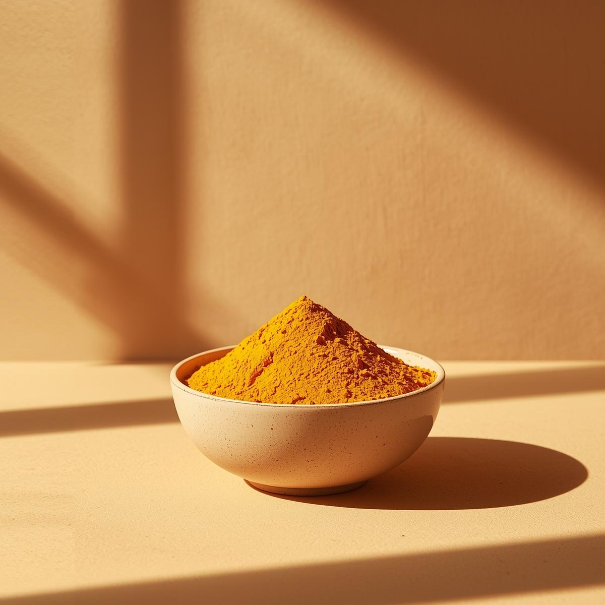
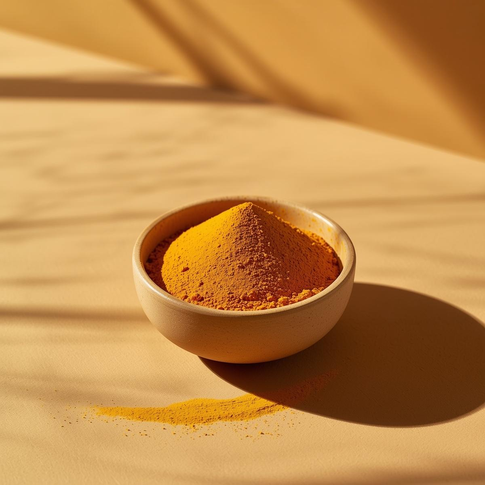
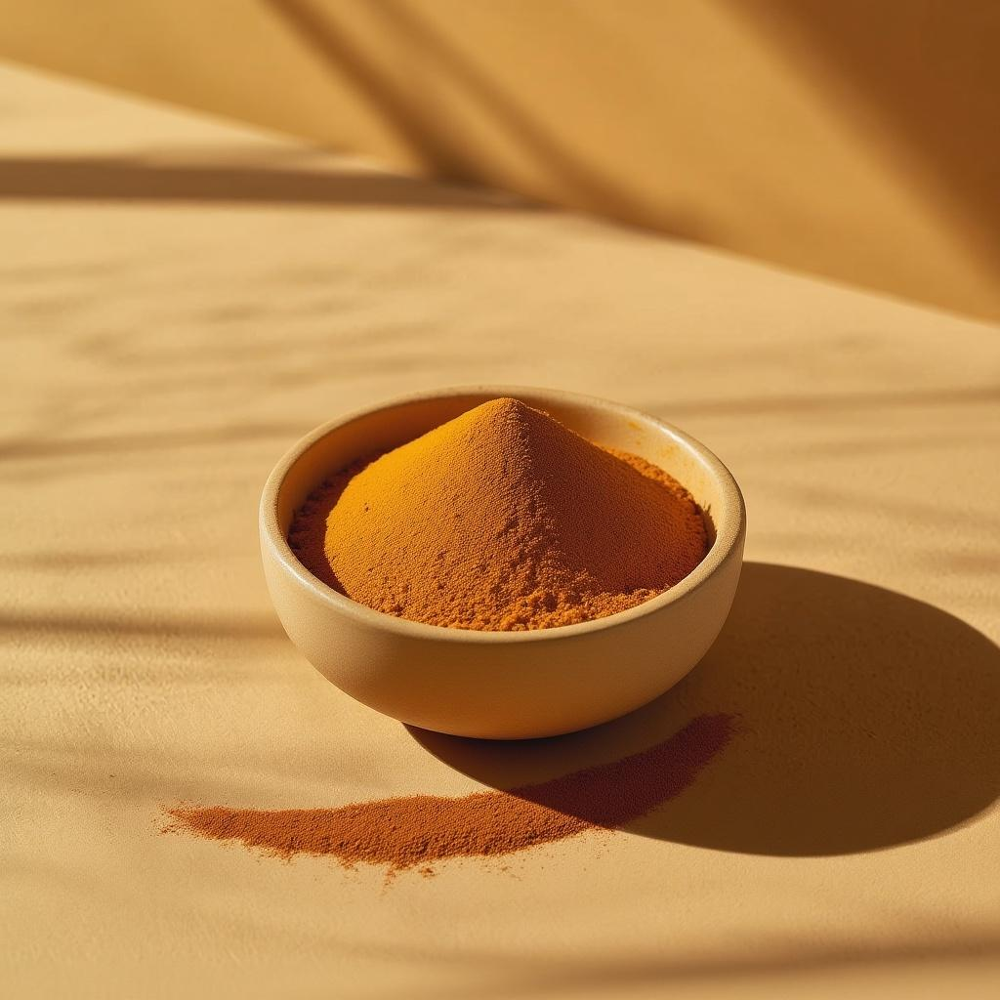
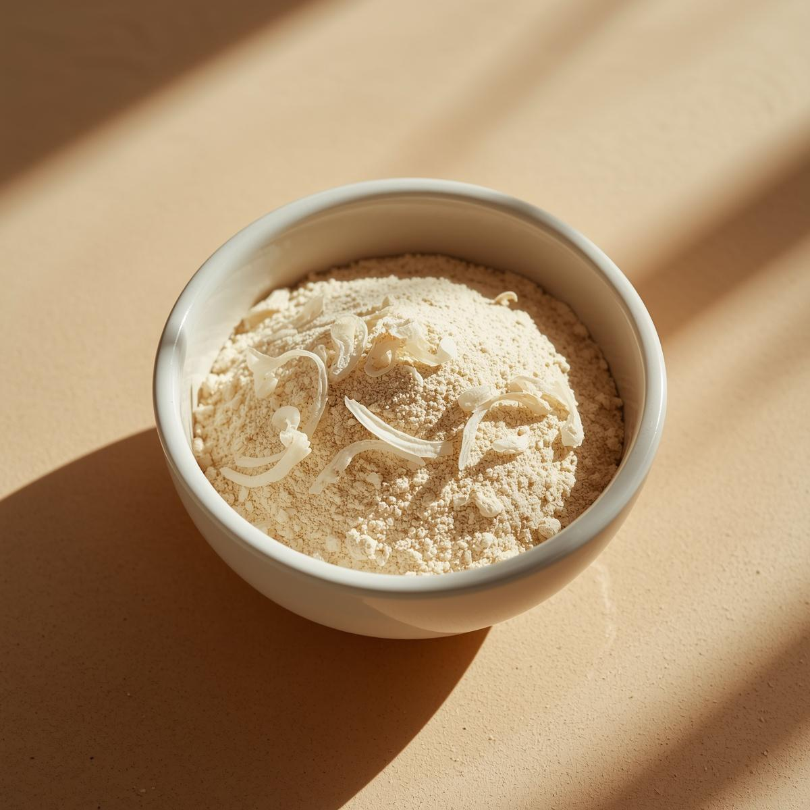
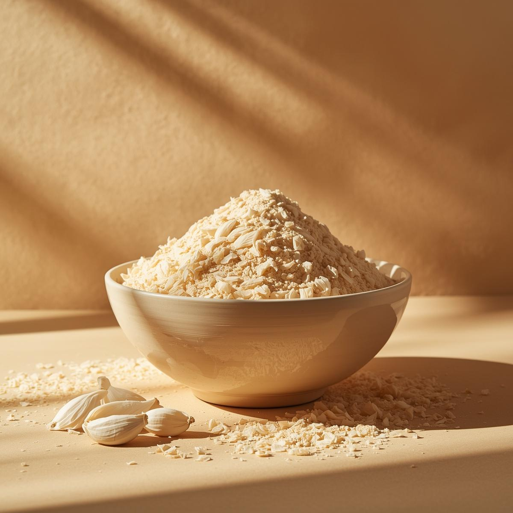

Orientální koření
Kari
Aromatická směs koření s kurkumou, kmínem a koriandrem. Základ indické i arabské kuchyně.
Pečlivě vybrané koření z původních lokalit Blízkého východu. Každý produkt nese příběh autenticity a kvality.

Orientální koření
Aromatická směs koření s kurkumou, kmínem a koriandrem. Základ indické i arabské kuchyně.

Orientální koření
Zlatý prášek Orientu s jemně zemitou chutí. Přirozené barvivo i léčivé koření v jednom.

Orientální koření
Sladce aromatická skořice z Cejlonu. Nepostradatelná v orientálních sladkých i slaných pokrmech.

Orientální koření
Jemné vločky sušené cibule pro intenzivní chuť bez slz. Ideální základ každé orientální omáčky.

Orientální koření
Granulovaný česnek s plnou chutí čerstvého česneku. Praktický pomocník orientální kuchyně.

Orientální koření
Luxusní směs čtyř druhů pepře pro plnou, komplexní pepřovou chuť s jemně ovocnými tóny.